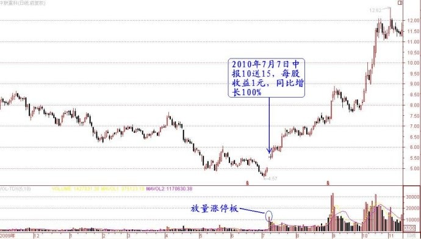

第164篇•关于短线选股问题的解答（3）
谷为陵
我现在来解答网友们关于短线选股的第二个问题，该问题是关于信息对于选股的作用的。网友们困惑的是，谁都知道利好信息会促涨股价，但问题是，一旦“有特大利好的，不是一字封板就是已到山顶”，哪里有参与的机会？
利好信息对于股价的影响问题，对于短线交易者来说是至关重要的，因为它往往能够决定短线交易的成败。利好信息对于股价的影响，是一个非常复杂的问题，并非促涨这么简单。
根据我的观察，利好信息对于股价既有促涨的作用，有时候也有促跌的作用。看到这里，有人会奇怪，利好信息怎么会使股价下跌呢？确实存在这样的情况。它一般出现在两种情况下：
一是股市处于熊市主跌浪，利好信息往往会成为股价暴跌的导火索和催化剂。我们经常看到，在牛市作为大利好的资产注入，在熊市推出时就成为了大利空，其利好公告之日，往往就是股价跌停之时。给我印象较深的是金岭矿业。该股是一只铁矿股，在2007年的大牛市里，铁矿资源股可是大热门股。但到了2008年7月21日，该股公告大股东注入铁矿。这个利好信息要是放在半年前，股价一定会有三个涨停板。但同样的利好信息，赶在了2008年7月的“熊腰”上，结果呢？该股在公告复牌后，连续四个跌停板！
二是当股票短线被大幅炒高，且股价的绝对价格很高的时候，利好信息往往会被看成是出货信号，此所谓“利好出尽是利空”。在股价高位公告利好信息，这种往往是上市公司的控股股东为了配合二级市场的庄家出货而制造的恶意“利好”题材，这种案例很多，我在前面阐述产业资本庄家时已经谈到过。
看到这里，大家应该明白了，利好信息对于股价能够起何作用，是需要一个作用的环境的，这个环境存在多种因素，因此，表面上看起来是利好信息对股价能够单独起作用，但实际上是利好信息与多种因素共同作用的结果。这些因素主要包括股市走势强度、发布利好信息的股票股价高低与股价短期涨幅、利好信息的力度以及主力的意志。
这些问题说起来是很复杂的。大致的情况是，在利好信息对于股价促涨作用强时，一般是股市处于强势、发布利好信息的股票股价较低以及短期涨幅较小、利好信息力度很大、主力意志坚决；在利好信息对于股价促涨作用弱时，一般是股市处于弱势、发布利好信息的股票股价股价很高或者短期涨幅很大，这时候，即使利好信息力度大以及主力意志很强，对于股价继续上涨也于事无补。
我说到的这些，都是A股最重要的一些市场特点。这些市场特点绝大多数人都不了解，不仅是散户不了解，很多庄家、主力以及控股股东都不了解。因此，我们经常会看到很多“逆市而为”的情况。比如，很多上市公司会在股市熊市公告利好信息，或者在股价高点公告增发信息，这些利好信息被白白浪费了。这些控股股东对于利好信息需要一个好的环境才能够起作用这一点不了解，他们以为任何利好信息对于股价的影响是绝对的，只要是利好，一定会促涨股价。但他们恰恰错了，利好信息对于股价的影响是相对的，只有合适的环境配合，利好信息对于股价的影响才能够与预期相一致。
这就是问题的关键之处。正因为利好信息对于股价的影响是相对的，需要合适的环境配合，因此，“有特大利好的，不是一字封板就是已到山顶”并不总是发生，在有些情况下，即使遇到“特大利好”，市场还是会给我们留下足够的机会的。这些机会主要是出现在股市处于某一段较长跌势末期的时候，市场对于利好信息的追捧程度要远远低于市场处于强势之时，但对于利好又不同于熊市主跌浪时的完全没有正面反应的情况。
我可以举一个典型的案例，也是曾我参与的一个案例。在2010年7月7日，中联重科公告了中报预报，其每股收益为1元，同比增长100%，且10送15。当时该股股价为17元。在当天公告后，该股以涨停板开盘。但由于该股的流通股本很大，多达十几亿股，是一个大盘股，所以，该股的涨停板一直没有封死，到上午收盘前在涨停板上还一直有成交。
我在该股开盘后并没有马上介入，因为我在算一个账。算什么呢？在算以涨停板买入中联重科到底有无风险。当时的市场情况是，上证指数已经自当年的4月的3200点开始下跌，一直跌到7月份最低的2319点，市场应该是处于弱势。我在想，既然股市在短期内已经跌了这么多，再继续大幅下跌的可能性不是没有，但概率应该较小，大概率的事件应该是股市会有一波超跌反弹。若股市有一波超跌反弹，那么，中联重科恰逢重大利好，是否会短线上涨个30%～50%呢？另外，即使股市不涨，以中联重科年报2元的业绩，市盈率才10倍，加之有10送15的题材，且该股也是经过一轮大跌后，股价现在处于底部，股价应该不至于会跌，大跌的可能性更没有。
最后我下了个结论：只要股市不继续大跌，中联重科因前期已经大跌，现在因这个重大利好，至少也应该有一波20%～30%的小反弹。若股市继续大跌，即使在涨停板追进中联重科，明天最多赔2%～3%就出局。从输赢概率来看，买进中联重科应该是一个赢面大的选择。我是我就在上午买进了，也给周围的几个好友打了电话，让他们也买进，当然，我也向他们说了以上的理由。结果呢？该股随后就展开了一轮涨幅达160%的主升浪！以下是该股当时的走势图：

从这个案例可以看出，并非“有特大利好的，不是一字封板就是已到山顶”，在股市跌到底部，且个股股价跌到底部时的“特大利好”，往往还会在公告后的一两天给你买进的机会，但你一定要做出快速反应。希望大家对底部发布特大利好的案例多进行研究，因为这是一类确定性极高的短线投机盈利模式。在股市高涨，个股疯狂的时候，“特大利好”确实往往不会在两三天内给你买进的机会，所以，我一直强调，股市下跌并不是坏事，反而是你“放出眼光”选股的好时机。
但是，不要误解我的在股市下跌时选股的本意。我并不是建议大家要进行左侧交易，对于短线投机者来说，左侧交易是不适合的。我强调的还是右侧交易，但这个右侧交易是发生在股市下跌的“左侧”的时候，这不是矛盾了吗？其实并不矛盾。我的意思是，要在股市或者个股下跌的“左侧”，关注如“黑天鹅”般的突发性的“特大利好”信息，一旦在股市底部或者个股底部出现了这样的“黑天鹅”事件，几乎百分之百地会将该股股价反转，从而将其由左侧的下跌趋势一举扭转为右侧的上涨趋势。该转折点就是“黑天鹅”事件的发生日！而这一天，就是你长久等待的猎物出现的时候，你还等什么呢？扣动扳机吧！
晚安！
（未完待续）